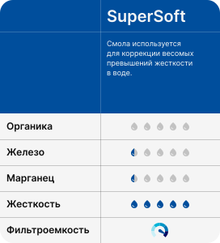
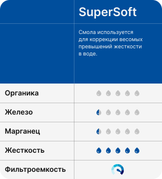

AQUACHIEF


Как устроен AquaChief?

Фильтр грубой (механической) очистки воды
Колонна с ионообменной смолой

Блок управления
Солевой бак

Угольный постфильтр

А как удалить запах?
Чем хорош AquaChief?

Очистка воды 24/7 в любое время года

Эффективная очистка
Тихая работа фильтра
Поддержка Wi-Fi
Как работает ионообменная смола?

Смолы не окисляют и не переводят растворенные вещества в твердую форму для последующего фильтрования, а, наоборот — забирают из раствора ионы (диссоциированные соли) кальция, натрия, железа, марганца и т.д. и замещают их на катионы натрия, который не придает воде такого свойства оставлять следы и накипь, как жесткость.
Запас натрия на стенках пор частиц смолы постепенно покидает смолу, замещаясь кальцием, железом и т.д., тем самым снижается способность смолы забирать из воды растворенные вещества. Когда заканчивается натрий в смоле — прекращается и очистка, вода проходит через толщу смолы не изменяя своих свойств.
Для восстановления фильтрационных свойств смолы, необходимо выполнить регенерацию.
Какие бывают ионообменные смолы?
 

Как проходит регенерация
За промывку системы отвечает блок автоматики RunXin, который оборудован расходомером и таймером. Каждый блок автоматики имеет серийный номер и настраивается нами индивидуально, исходя из уровня загрязнений. Расходомер фиксирует моментальный расход воды. Когда значение достигает установленного уровня, блок автоматики переходит в режим "запланированной промывки", то есть он дождется 2х часов ночи и тогда запустит плановую промывку(регенерацию) системы.
Промывка выполняется с полным перекрытием воды, продолжается 1-1.5 часа и состоит из следующих стадий:
- Обратная промывка - обратным потоком воды смола взрыхляется. Небольшие механические примеси, оксиды железа смываются в канализацию
- Регенерация - из солевого бака, очень медленно начинает забираться солевой раствор, который попадает на ионообменную смолу, вызывая обратный ионообменный процесс. Все что смола в себя впитала (соли жесткости и растворенное железо) уходит в солевой раствор, а ионы натрия замещают их место. Этот процесс длится 40-60 минут
- Затем колонна промывается чистой водой
- И заключительным этапом набирается солевой бак, в котором будет готовится солевой раствор для следующей регенерации.
Чтобы регенерация не доставляла дискомфорта, она выполняется ночью. Если Вы долго не пользуетесь водой, то автоматика принудительно промоет систему и регенерирует воду через 21 день с момента последней регенерации. Это сделано специально, чтобы вода в колонне не застаивалось и фильтрующие свойства смолы не уменьшались.
Кому подходит AquaChief?
Требования к месту монтажа
- В помещении есть участок трубопровода под врезку
- Давление в системе водоснабжения находится в диапазоне 2..5 атм
- Наличие канализационного (40/50 мм) отвода под промывку системы
- При очистке воды из скважины, обеспечить дебит не менее 1.5 м3/час
- Исключить попадание прямого солнечного света на систему очистки воды
- Наличие на стене одной розетки (220В) в месте установки системы
-
Температурный
режим +5..+30 C - Отсутствие посторонних предметов, мешающих проведению монтажа и прочих физических препятствий (высота помещения, навесные предметы) для размещения системы очистки
Готовые комплекты

AquaChief-SX
Удаляет:
- соли жесткости до 15 град Ж
- растворенное железа до 0,3 мг/л
- марганец до 0,1 мг/л
AquaChief-FE
Удаляет:
- соли жесткости до 7 град Ж
- растворенное железа до 10 мг/л
- марганец до 4 мг/л
Aquachief-ZX
Удаляет:
- соли жесткости до 5 град Ж
- растворенное железа до 10 мг/л
- органику 10 мг/л
- марганец до 0.1 мг/л
Подобрать свой AquaChief
Как мы работаем
Шаг №1
Шаг №2
Шаг №3
Шаг №4
- отвезем его на терминал транспортной компании (“Деловые линии”, “Байкал Сервис”, “КИТ”, иные)
- Либо если Вы находитесь в Москве, Санкт-Петербурге, Твери, Ярославле - Вы можете забрать его самостоятельно со склада.
Шаг №5
Шаг №6
Шаг №1
Шаг №2
Шаг №3
Шаг №4
- отвезем его на терминал транспортной компании (“Деловые линии”, “Байкал Сервис”, “КИТ”, иные)
- Либо если Вы находитесь в Москве, Санкт-Петербурге, Твери, Ярославле - Вы можете забрать его самостоятельно со склада.